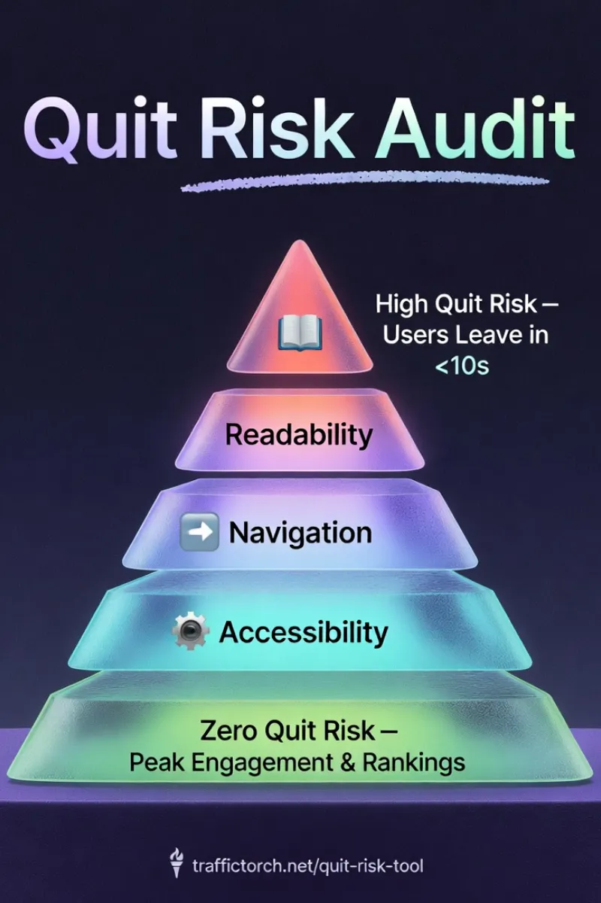
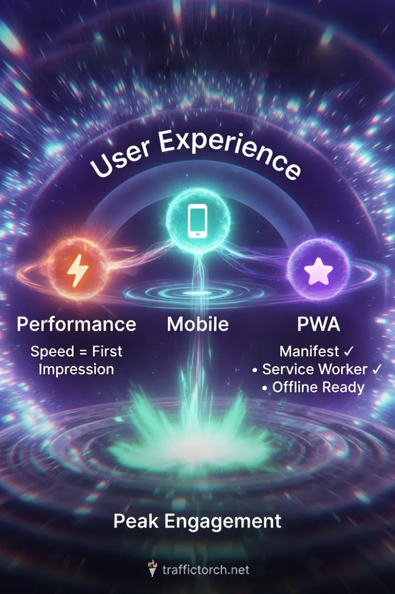

Quit Risk UX Health Analysis Audit Tool
Detect high quit-risk elements, friction points, poor UX signals, and conversion killers.
Daily Limit Reached
You've used all your audits today. Upgrade to Pro USD $48 per year for 25 daily SEO, UX & GEO analysis runs. Secure Stripe Checkout
Upgrade to ProAnalyzing Quit Risk...
How the Quit Risk Tool Works? ↓
Instant, Privacy-Safe UX Health Audit
This bounce rate predictor performs a real-time usability analysis by securely fetching your page's HTML via our CORS proxy and parsing the DOM entirely in your browser.
No data leaves your device. Everything processes instantly and privately on-device for complete security.
The 5 Core UX Factors Analyzed
- Readability Scoring: Flesch Reading Ease & Kincaid grade level on main content: rewards clear, scannable writing.
- Navigation Clarity: Link density and menu structure evaluation to avoid cognitive overload.
- Accessibility Health: Proxy checks for alt-text coverage, contrast, and semantic structure (WCAG-inspired).
- Mobile & PWA Readiness: Viewport configuration, responsive design, touch targets, and progressive web app compliance.
- Performance Optimization: Asset volume flags, script/font bloat detection, lazy loading opportunities.
Deep Dive into Key Modules

